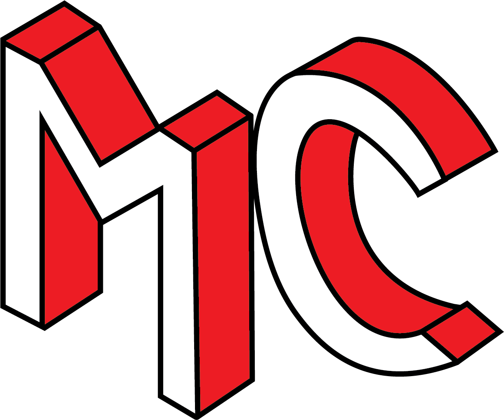

Hello.
Thank you for stopping by. My name is Molly-Colleen Thomson. In 2019 I completed Algonquin College's three-year Advertising and Marketing Communications Management program. The program combined both business theory and creative messaging. Some of the many skills acquired during that period include graphic design, art direction, illustration as well as social media marketing and analytics. I gained the ability to perform a market segmentation analysis while developing an integrated advertising and marketing communications plan.
Currently, I am completing a one-year postgraduate in Interactive Media Management at Algonquin College. Throughout the program, I’ve had the opportunity to learn six different computer coding languages as well as retouching my skills within the Adobe Master Collection which includes Photoshop, Illustrator, and more. Roles took part include front-end web design, server and clientside development, UX/UI design, graphic design, digital publishing and project management.
